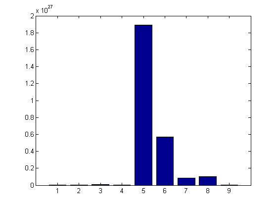
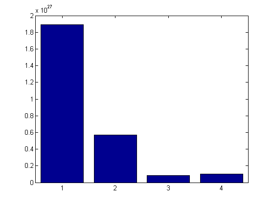
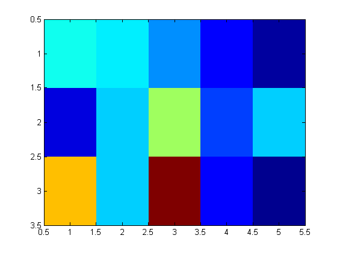

Contents
% Copyright 2015, Ashwin Srinath, All Rights Reserved % LICENSE: MIT (http://opensource.org/licenses/MIT) % (TL;DR) % You can do whatever you want % with this code % as long as you include the original copyright % and license in their original sources. % I don't guarantee that % any of this code % serves any purpose whatsoever.
Introduction
In this document, we'll talk about MATLAB's in-built functions, and how and why to use them
Here are the masses of the planets in our Solar System:
planet_masses = [3.3e23, 4.86e24, 5.97e24, 6.41e23, 1.89e27, ...
5.68e26, 8.68e25];
disp(planet_masses)
1.0e+27 *
0.0003 0.0049 0.0060 0.0006 1.8900 0.5680 0.0868
Let's pull out just the mass of Mars:
mars_mass = planet_masses(4); disp(mars_mass)
6.4100e+23
Let's check the length of planet_masses:
length(planet_masses)
ans =
7
Whoops! We missed Neptune and Pluto! Let's append those to planet_masses:
planet_masses = [planet_masses, 10.2e25, 1.25e22]; disp(planet_masses)
1.0e+27 *
Columns 1 through 7
0.0003 0.0049 0.0060 0.0006 1.8900 0.5680 0.0868
Columns 8 through 9
0.1020 0.0000
Let's try to visualize the relative masses of the planets:
bar(planet_masses)
Here's a visualization of the masses of just the Gas Giants:
gas_giant_mases = planet_masses(5:8); bar(gas_giant_mases)
Remember, when constructing vectors or matrices, commas (,) append things horizontally, and semicolons (;) append things vertically.
Built-in functions
In the previous handful of commands, we used a lot of MATLAB's in-built functionality, like disp, length and bar. These are are called MATLAB functions, and they are invoked, or called with the following syntax:
functionName(input1, input2, ...)
Inputs are also called parameters or arguments
In general, functions can accept more than one input:
zeros(2, 3)
ans =
0 0 0
0 0 0
And we can "catch" what the function returns by assigning it to a variable:
zeros_mat = zeros(2, 3); disp(zeros_mat)
0 0 0
0 0 0
Some functions can work with variable number of inputs:
ones(3)
ans =
1 1 1
1 1 1
1 1 1
ones(3,4)
ans =
1 1 1 1
1 1 1 1
1 1 1 1
Function calls can be part of larger expressions:
V = 5*ones(1,3); disp(V)
5 5 5
When a function returns more than one thing, we can assign each output to a separate variable with special syntax like this:
B = randi(10, 5, 4); [nrows, ncols] = size(B); disp(nrows) disp(ncols)
5
4
Getting help on a function
To access a function's documentation, i.e., information on what a functions does, and how to use it, simply run a help on that function like so:
help size
SIZE Size of array.
D = SIZE(X), for M-by-N matrix X, returns the two-element row vector
D = [M,N] containing the number of rows and columns in the matrix.
For N-D arrays, SIZE(X) returns a 1-by-N vector of dimension lengths.
Trailing singleton dimensions are ignored.
[M,N] = SIZE(X) for matrix X, returns the number of rows and columns in
X as separate output variables.
[M1,M2,M3,...,MN] = SIZE(X) for N>1 returns the sizes of the first N
dimensions of the array X. If the number of output arguments N does
not equal NDIMS(X), then for:
N > NDIMS(X), SIZE returns ones in the "extra" variables, i.e., outputs
NDIMS(X)+1 through N.
N < NDIMS(X), MN contains the product of the sizes of dimensions N
through NDIMS(X).
M = SIZE(X,DIM) returns the length of the dimension specified
by the scalar DIM. For example, SIZE(X,1) returns the number
of rows. If DIM > NDIMS(X), M will be 1.
When SIZE is applied to a Java array, the number of rows
returned is the length of the Java array and the number of columns
is always 1. When SIZE is applied to a Java array of arrays, the
result describes only the top level array in the array of arrays.
Example:
If
X = rand(2,3,4);
then
d = size(X) returns d = [2 3 4]
[m1,m2,m3,m4] = size(X) returns m1 = 2, m2 = 3, m3 = 4, m4 = 1
[m,n] = size(X) returns m = 2, n = 12
m2 = size(X,2) returns m2 = 3
See also LENGTH, NDIMS, NUMEL.
Overloaded methods:
serial/size
timer/size
triangulation/size
TriRep/size
daqdevice/size
daqchild/size
distributed/size
codistributed/size
Composite/size
gpuArray/size
videosource/size
videoinput/size
visa/size
udp/size
tcpip/size
icgroup/size
icdevice/size
i2c/size
gpib/size
Bluetooth/size
InputOutputModel/size
dataset/size
categorical/size
symfun/size
sym/size
tscollection/size
Reference page in Help browser
doc size
You can also use the F1 key to search MATLAB's documentation.
Use doc for more extensive documentation: doc size
Some more functions (and a little philosophy)
Here's some more data from another Kart-race. This time we have the lap timings for 5 laps for three players: koopa, yoshi and luigi:
race_times = [22.1, 21.7, 20.2, 18.2, 16.7; ... 17.7, 21.2, 24.3, 19.1, 21.1; ... 26.6, 21.2, 31.4, 18.2, 16.4];
Let's pull out yoshi's lap times:
yoshi_times = race_times(2, :);
We can sort yoshi's lap times using the sort command:
sort(yoshi_times)
ans = 17.7000 19.1000 21.1000 21.2000 24.3000
sort can also be used to sort in descending order:
sort(yoshi_times, 'descend')
ans = 24.3000 21.2000 21.1000 19.1000 17.7000
How does sort work for a matrix?
sort(race_times)
ans = 17.7000 21.2000 20.2000 18.2000 16.4000 22.1000 21.2000 24.3000 18.2000 16.7000 26.6000 21.7000 31.4000 19.1000 21.1000
For a matrix, sort sorts every column. We can have it sort every row instead:
sort(race_times, 2)
ans = 16.7000 18.2000 20.2000 21.7000 22.1000 17.7000 19.1000 21.1000 21.2000 24.3000 16.4000 18.2000 21.2000 26.6000 31.4000
To find yoshi's fastest lap, we can use the min function:
min(yoshi_times)
ans = 17.7000
For a matrix, min computes the minimum of each column:
min(race_times)
ans = 17.7000 21.2000 20.2000 18.2000 16.4000
To get the minimum for each row, the syntax is a bit more involved, but it's clear from the help documentation on min:
min(race_times, [], 2)
ans = 16.7000 17.7000 16.4000
To get the minimum of the entire matrix, we could do:
min(min(race_times))
ans = 16.4000
Or alternatively:
min(race_times(:))
ans = 16.4000
sum also sums columns by default:
sum(race_times)
ans = 66.4000 64.1000 75.9000 55.5000 54.2000
To sum rows:
sum(race_times, 2)
ans = 98.9000 103.4000 113.8000
Finally, a nice way to visualize a matrix is to represent each number by a color:
imagesc(race_times)
Red indicates higher values, while blue indicates lower ones
So functions let you do neat stuff with data, without having you worry about the details, i.e., how the function is implemented. If you'll notice, the help on a function in MATLAB tells you what the function does and how to use it. But it doesn't specify how the function does what it does.
This idea of "hiding information" is one of the most essential in programming. A later version of MATLAB, for instance, might use a faster sort algorithm, but it won't change how you use sort in your programs. This is what makes functions so great---you can use them without having to think about how they are implemented.
This is one reason you should always prefer MATLAB's built-in functions over your own implementations - you don't have to worry about the details because someone else has already done that for you.